تشوهات فضاء الانزياح الأحمر في محاكاة إشارة 21-سم من الفجر الكوني
الملخص
من المرجح أن تحتوي إشارة 21-سم الصادرة عن الفجر الكوني (CD) على تقلبات كبيرة، حتى إن أكثر النماذج الفيزيائية الفلكية تطرفا باتت قريبة من الاستبعاد بواسطة أرصاد مقاييس التداخل الراديوية. لذلك فمن الضروري أن نفهم لا العمليات الفيزيائية الفلكية التي تحكم هذه الإشارة فحسب، بل أيضا العمليات الجوهرية الأخرى التي تؤثر في الإشارة نفسها، ولا سيما تأثيرات خط البصر. وباستخدام مجموعتنا من محاكيات انتقال الإشعاع العددية الكاملة، ندرس أثر إحدى هذه العمليات، وهي تشوهات فضاء الانزياح الأحمر (RSDs)، في إشارة 21-سم المزاحة نحو الأحمر من الفجر الكوني. عند إدراج RSDs، يزيد التعزيز الناتج في أطياف القدرة قابلية الإشارة للكشف في نماذجنا عند جميع الانزياحات الحمراء، مما يعزز أكثر إمكانية قياس طيف قدرة الفجر الكوني. تؤدي RSDs إلى لاتناحي في الإشارة عند بداية الفجر الكوني ونهايته، ولكن ليس أثناء مرحلة التسخين بالأشعة السينية. غير أن إدراج RSDs يخفض قابلية كشف اللاغاوسية في التقلبات الناشئة عن التسخين بالأشعة السينية غير المتجانس، والمقاسة بالالتواء والتفرطح. ومن جهة أخرى، تظهر الأرصاد الصورية المنشأة من جميع محاكياتنا، والتي تتضمن ضوضاء تلسكوبية تقابل رصدا مدته 1000 h بتلسكوب Square Kilometre Array، أننا قد نستطيع تصوير الفجر الكوني في جميع نماذج التسخين المدروسة، كما تشير إلى أن RSDs تعزز بصورة كبيرة التقلبات الآتية من خلفية Ly- غير المتجانسة.
keywords:
علم الكونيات: النظرية — انتقال الإشعاع — إعادة التأين — الوسط بين المجرات — البنية واسعة النطاق للكون — المجرات: التكون1 مقدمة
أنهت الفوتونات المنبعثة من أولى المصادر المضيئة الحقبة المعروفة بالعصور المظلمة، التي استمرت عدة ملايين من السنين بعد تكون الخلفية الكونية الميكروية (CMB)، ومثلت بداية الفجر الكوني (CD). واستمر الفجر الكوني إلى أن بدأت المصادر المضيئة تؤين الوسط بين المجرات (IGM) بدرجة ملحوظة، وعندئذ بدأت حقبة إعادة التأين (EoR). وعلى الرغم من أن IGM لم يكن قد تأين بدرجة كبيرة خلال الفجر الكوني، فإن الأشعة السينية الصادرة من المجرات المبكرة استطاعت النفاذ إلى IGM وتغيير درجة حرارته الحركية. كما امتلكت فوتونات Ly- مسارات حرة وسطية طويلة، ومن ثم غيرت درجة حرارة اللف المغزلي للهيدروجين في IGM. إن دراسة IGM خلال الفجر الكوني ستلقي الضوء على كيفية تشكل مصادر الجيل الأول هذه وتطورها، وعلى كيفية تأثيرها في IGM في كوننا. انظر Pritchard201221cmCentury وMcQuinn2016TheMedium لمراجعة تطور IGM خلال الفجر الكوني وEoR.
قُيّد حدوث EoR بأنه وقع بين و15 من خلال أرصاد كل من CMB (مثلا Komatsu2011Seven-yearInterpretation; PlanckCollaboration2016PlanckHistory) وغابة Ly- في أطياف الكوازارات ذات الانزياح الأحمر العالي (مثلا Fan2005ConstrainingQuasars; Fan2006ObservationalReionization; Davies2018; Bosman2018; Keating2019LongHydrogen). وبما أن الهيدروجين يشكل الغالبية العظمى من IGM، فمن المتوقع أن تكون فوتونات 21-سم الناشئة من انتقال انقلاب اللف للهيدروجين المتعادل مسبارا ممتازا لـ EoR وCD. تبحث التلسكوبات الراديوية حاليا عن فوتونات 21-سم المزاحة نحو الأحمر، وهي مهمة شديدة الصعوبة بسبب المقدمات الفيزيائية الفلكية الساطعة. وتشمل التلسكوبات الراديوية الحالية القادرة على كشف إشارة 21-سم Giant Metrewave Radio Telescope (GMRT)11 1 http://www.gmrt.ncra.tifr.res.in/(GMRT2013)، وLow Frequency Array (LOFAR)22 2 http://www.lofar.org/ (vanHaarlem2013LOFAR:ARray)، وMurchison Widefield Array (MWA)33 3 http://www.mwatelescope.org/ (bowman13)، وHydrogen Epoch of Reionization Array (HERA)44 4 https://reionization.org/ (2017PASP..129d5001D). وهذه المقاييس التداخلية الراديوية حساسة لتقلبات الإشارة لا لمقدارها المطلق. وحتى الآن لم يتحقق كشف لهذه التقلبات، وإن كانت بعض الحدود العليا قد وضعتها LOFAR (مثلا 2019ApJ...883..133K; Mertens2020ImprovedLOFAR; Gehlot2020) وMWA (مثلا Barry2019; Trott2020DeepObservations)، مما أدى إلى بعض القيود على الإشارة (مثلا Ghara2020ConstrainingObservations; Mondal2020TightLOFAR; 2020arXiv200603203G; Greig2020ExploringSignal). وسيبدأ تشغيل تلسكوب Square Kilometre Array (SKA)55 5 https://www.skatelescope.org/(Mellema2013ReionizationArray; Koopmans2015TheArray) الراديوي خلال النصف الثاني من هذا العقد. وسيكون المكون منخفض التردد من SKA (SKA-Low) حساسا بما يكفي ليس لكشف طيف قدرة إشارة 21-سم خلال CD/EoR فحسب، بل لإنتاج الصور أيضا.
تبحث التلسكوبات ذات الهوائي الواحد عن إشارة 21-سم العالمية، مثل Experiment to Detect the Global EoR Signature (EDGES)66 6 https://www.haystack.mit.edu/ast/arrays/Edges/ (Bowman2018AnSpectrum)، وLarge-aperture Experiment to Detect the Dark Age (LEDA)77 7 http://www.tauceti.caltech.edu/leda/ (price2018design)، وShaped Antenna measurement of the background RAdio Spectrum (SARAS2)88 8 http://www.rri.res.in/DISTORTION/saras.html (Singh2018)، و Dark Ages Polarimeter Pathfinder (DAPPER)99 9 https://www.colorado.edu/ness/dark-ages-polarimeter-pathfinder-dapper (burns2019). ويزعم Bowman2018AnSpectrum كشف إشارة امتصاص عند 21-سم في هوائي EDGES منخفض النطاق عند . ويزيد مقدار هذه الإشارة كثيرا عما نتوقعه وفق فهمنا النظري الراهن، ولذلك نوقشت دقة هذه النتائج (مثلا في Hills2018ConcernsData; 2018ApJ...858L..10D; 2019ApJ...880...26S; 2019ApJ...874..153B). وإذا صحت هذه النتائج، فهي تشير إلى أن فهمنا للكون المبكر يحتاج إلى تحديث ليشمل إما خلفية راديوية قوية غير CMB (2018ApJ...858L..17F; 2019MNRAS.486.1763F) أو آلية تبريد إضافية (انظر مثلا 2014PhRvD..90h3522T; Bowman2018AnSpectrum; 2018PhRvL.121a1101F; 2018arXiv180210094M).
سيرصد SKA-Low السماء عند ترددات مختلفة، تقابل انزياحات حمراء مختلفة. وستشكل سلسلة من الصور عند انزياحات حمراء مختلفة بيانات ثلاثية الأبعاد، تعرف باسم مجموعة البيانات المقطعية (نحيل القارئ المهتم إلى giri2019tomographic). ومن ثم، فعند تحليل إشارة 21-سم المزاحة نحو الأحمر، من المهم أخذ تأثيرات خط البصر (LoS) في الحسبان، وهي تأثيرات تغير الإشارة على نحو مستقل عن العمليات الفيزيائية الفلكية. وستتأثر إشارة 21-سم المزاحة نحو الأحمر بتأثيرين على خط البصر: تشوهات فضاء الانزياح الأحمر (Jensen2013ProbingDistortions; Mao2012Redshift-spaceRe-examined)، وتأثير المخروط الضوئي (Datta2012Light-coneSpectrum). وقد تضيف معرفتنا غير الكاملة بعلم كون الكون الأساسي تأثير Alcock-Paczynski إلى إشارة 21-سم المزاحة نحو الأحمر (Alcock1979; Nusser2005TheMaps). ويقتصر نطاق هذا العمل على RSDs، ونترك دراسة تأثيري المخروط الضوئي وAlcock-Paczynski لعمل مستقبلي.
في كوننا المتمدد، يقابل الانزياح الأحمر الكوني مسافة معينة. ويمكن للسرعات الخاصة لغاز الهيدروجين أن تضيف انزياحات زرقاء أو حمراء إضافية إلى الإشارة، فتغير المسافة الظاهرية إلى الوسط المرصود، ومن ثم تشوه توزيع الإشارة في مجموعة البيانات المقطعية. ويسمى هذا التأثير تشوه فضاء الانزياح الأحمر (RSD) (مثلا Jensen2013ProbingDistortions; Majumdar2015EffectsDistortions).
الفرق الرئيسي بين إشارة 21-سم في الفضاء الحقيقي وفضاء الانزياح الأحمر الناتج عن RSDs هو تأثير كايزر (Kaiser1987)، حيث تبدو المناطق الكثيفة أكثر كثافة، وتبدو المناطق ناقصة الكثافة أكثر تخلخلا مما هي عليه فعلا. وينشأ تأثير كايزر من ميل المادة إلى الحركة نحو المناطق عالية الكثافة. فالإشعاع المنبعث من غاز يقع بيننا وبين منطقة كثيفة سيكون عادة منزاحا نحو الأحمر، لأن الغاز يسقط مبتعدا عنا إلى داخل المنطقة عالية الكثافة، أما الإشعاع المنبعث من الغاز في الجانب البعيد فسيكون منزاحا نحو الأزرق لأن الغاز يسقط باتجاهنا. وعندما تهيمن تقلبات الكثافة، أي في غياب خلفية Ly- غير متجانسة والتسخين بالأشعة السينية والتأين، يعزز تأثير كايزر التقلبات في طيف قدرة 21-سم على جميع المقاييس بعامل 1.87 (Bharadwaj2004TheReionization; Barkana2005AFluctuations).
أظهرت دراسات سابقة أن RSD يمكن أن يضخم طيف قدرة 21-سم حتى عامل (Mao2012Redshift-spaceRe-examined; Ghara201521cmVelocities). ويعد إدراج RSDs في إشارة 21-سم المحاكاة أمرا مهما للحصول على نتائج واقعية تقارن بالأرصاد (Jensen2013ProbingDistortions; Jensen2016TheMeasurements). ركز معظم العمل السابق على أثر RSDs في إشارة 21-سم من EoR (McQuinn2006CosmologicalReionization; Mesinger2011; Jensen2013ProbingDistortions; Jensen2016TheMeasurements)، ولم يتضمن RSDs في CD إلا عدد قليل من الأعمال السابقة (مثلا Fialkov2014; Ghara201521Effects). كما ركزت أعمال أخرى تحديدا على استخدام اللاتناحي المتولد في إشارة 21-سم بفعل RSDs للفصل بين التأثيرات الفيزيائية الفلكية والكونية (مثلا Shaw2008; Shapiro2013; Majumdar2015EffectsDistortions).
سنركز في هذه الورقة على RSDs في CD. وقد اقتصرت الأعمال السابقة التي أدخلت RSDs في هذه الحقبة على محاكيات شبه عددية. وفي هذه الورقة، وللمرة الأولى، نبني على هذه الدراسات من خلال بحث أثر إدراج RSDs في إشارة 21-سم من CD باستخدام محاكيات عددية كاملة. وإلى جانب تكرار التحليل المنجز لهذه المحاكيات السابقة، أي أطياف قدرة 21-سم متناحية الخواص، والإحصاءات أحادية النقطة، والصور، مع إدراج RSDs هذه المرة، سنبحث أيضا لاتناحي إشارة 21-سم. وسندرس كذلك قابلية كشف إشارة 21-سم باستخدام SKA، كما فعل Jensen2013ProbingDistortions لقابلية كشف EoR باستخدام LOFAR. وأخيرا سندرس أثر RSDs في مجموعة متنوعة من السيناريوهات الفيزيائية الفلكية في CD.
تتألف الورقة كما يلي. في القسم 2 نعرض محاكيات -body وانتقال الإشعاع (RT) المستخدمة في هذا العمل ونماذج المصادر التي تعتمدها. وفي القسم 2 نلخص استخراج بصمات 21-سم والإحصاءات ذات الصلة من محاكياتنا، ونفصل حساباتنا لتأثيرات خط البصر. ويتضمن القسم 3 نتائجنا، ولا سيما المقارنات بين نماذج المصادر المختلفة. ثم نلخص نتائجنا في القسم 4. المعلمات الكونية التي نستخدمها في هذا العمل كله هي (، ، ، ، ، ) = (0.73، 0.27، 0.044، 0.96، 0.8، 0.7)؛ حيث يحمل الترميز معناه المعتاد و. وتتوافق هذه القيم مع النتائج النهائية من WMAP (Komatsu2011Seven-yearInterpretation) ومع Planck مضافا إليه جميع القيود الأخرى المتاحة (PlanckCollaboration2016PlanckHistory; PlanckCollaboration2018PlanckParameters).
2 المنهجية
2.1 المحاكيات
استُخدمت محاكاة عالية الدقة للأجسام شُغلت بشيفرة CubeP3M (Harnois2013) لتوفير حقول الكثافة وفهارس الهالات. وتملك هذه المحاكاة حجما جانبيا قدره Mpc مرافقا لالتقاط التقلبات واسعة النطاق، مع جسيمات تتيح تعريفا موثوقا للهالات حتى باستخدام باحث الهالات الموصوف في Watson2013TheAges. وأضيفت الهالات حتى باستخدام نموذج دون شبكي من Ahn2015a. ومُهدت جسيمات الأجسام إلى شبكة من أجل RT باستخدام نواة شبيهة بـ SPH (Iliev2014SimulatingEnough). ولمزيد من التفاصيل عن هذه المحاكاة، انظر Dixon2016TheReionization.
أُجريت محاكيات RT باستخدام شيفرة C2-Ray (Mellema2006CRadiation; Friedrich2012) على تعاقب من شبكات الكثافة وقوائم المصادر المستمدة من محاكاة الأجسام أعلاه، والمحدثة كل 11.52 Myr. وتشمل هذه المحاكيات التسخين متعدد الترددات، والأنواع الثلاثة كلها من الهيليوم، والتأينات الثانوية، ونهجا متعدد الأطوار موصوفا في Ross2019EvaluatingDawn. ونحلل في المجموع خمس محاكيات، وإن كان معظم البحث يركز على المحاكاة الأصلية المعروضة في Ross2017. وترد تفاصيل نماذج المصادر في القسم 2.2. وقد عُرضت هذه المحاكيات سابقا في Ross2017 وRoss2018 وRoss2019EvaluatingDawn.
لنمذجة خلفية فيض Ly- غير المتجانسة نستخدم طريقة شبه عددية في خطوة معالجة لاحقة، كما وردت في Ghara2016 وRoss2018. تفترض هذه الطريقة ملفا كرويا، وقد بُين أنه تقريب جيد حتى في وجود تقلبات الكثافة بواسطة Vonlanthen2011، ويتناقص على صورة (semelin07; Vonlanthen2011; Higgins2012).
2.2 المصادر
| S1 EL | S1 LL | S2 EL | S2 LL | S3 EL | S3 LL | S4 EL | S4 LL | |
|---|---|---|---|---|---|---|---|---|
| 1.5 | 1.5 | 1.5 | 1.5 | – | – | – | – | |
| – | – | 0.8 | 0.8 | 0.8 | 0.8 | 1.6 | 1.6 | |
| Ly- | Early | Late | Early | Late | Early | Late | Early | Late |
ننظر في ثلاث فئات من المصادر المضيئة: المصادر النجمية، وثنائيات الأشعة السينية عالية الكتلة (HMXBs)، والكوازارات (QSOs). وتُلخص النماذج المستخدمة في الجدول LABEL:tab:models مع إبراز النموذج المرجعي بخط عريض. ويركز معظم هذا العمل (القسم 3.1) على S1 EL (المبرز في الجدول LABEL:tab:models)، في حين تُحلل النماذج الأخرى في القسم 3.2 لتحديد اختلافاتها وقابليتها للكشف.
2.2.1 المصادر النجمية
تتشكل المصادر النجمية داخل هالات المادة المظلمة المستخرجة من محاكاة الأجسام . فهالات التبريد الذري عالية الكتلة، HMACHs، هي هالات ذات كتل كبيرة بما يكفي ( M⊙) لتبريد الغاز المتأين تبريدا ذرياً، ولذلك لا تُثبط أبدا. أما الهالات ذات الكتل الأصغر فلا تستطيع تبريد الغاز المتأين من IGM بما يكفي، لكنها تستطيع أن تراكم غازا متعادلا. ونفترض أن هالات التبريد الذري منخفضة الكتلة، LMACHs، لا تكون نجوما عندما تقع في خلايا تزيد نسبة تأينها على 10. وللمصادر النجمية لدينا أطياف جسم أسود بدرجة حرارة فعالة قدرها K. ولمزيد من التفاصيل عن تنفيذ هذه المصادر، انظر Dixon2016TheReionization.
تنتج المصادر النجمية أيضا فوتونات Ly-، التي تؤثر في درجة حرارة اللف المغزلي (انظر القسم 2.3). وننظر في سيناريوهين لتوقيت تشبع Ly-:
1) مبكر: حيث تكون خلفية Ly- قد تكوّنت بالفعل بواسطة مصادر مبكرة جدا تسمى الهالات الصغيرة قبل بدء المحاكاة. وهنا لا نحتاج إلى حساب فيض Lyman-.
2) متأخر: حيث تكون باعثات Ly- الوحيدة هي المصادر المدرجة في محاكياتنا. وهنا نستخدم الطريقة شبه العددية الموصوفة أعلاه في نهاية القسم 2.1. حُصل على الأطياف اللازمة لحسابات فيض Ly- من شيفرة تركيب التجمعات النجمية PEGASE2 (Fioc1999). ونفترض أن كتل النجوم تقع بين 1 و100 M⊙ مع دالة كتلة ابتدائية من نوع Salpeter، وبمعدنيات منخفضة (أقل من الشمس بمقدار 1000 مرة). وفي هذه الحسابات نفترض أن جميع فوتونات Lyman- تفلت، وكذلك 10 في المائة من الفوتونات المؤينة.
2.2.2 HMXBs
يُفترض أيضا أن مصادر HMXB تتشكل في هالات المادة المظلمة، وأن لها أطياف قانون قدرة:
| (1) |
حيث ، بما يتفق مع Hickox2007. ويمتد نطاق الطاقة من 272.08 eV، بما يتفق مع الأعمال الرصدية حول الاحتجاب (مثلا Lutivnov2005) وانفجارات أشعة غاما (مثلا Totani2006; Greiner2009)، إلى 100 مرة طاقة التأين الثاني للهيليوم (5441.60 eV). وكما في المصادر النجمية، يرتبط اللمعان بكتلة الهالة المضيفة، مع كفاءة فوتونية أدنى، وهو متسق تقريبا مع قياسات ثنائيات الأشعة السينية في المجرات المحلية ذات الانفجار النجمي (Mineo2012). وتتوفر تفاصيل إضافية عن هذه المصادر في Ross2017.
2.2.3 مصادر QSO
لـ QSOs أيضا طيف قانون قدرة يعطى بالعلاقة:
| (2) |
حيث = 0.8 (Ueda2014) أو 1.6 (Brightman2013) في نموذجي QSO لدينا. وباستثناء امتلاكها أطياف قانون قدرة، فإن مصادر QSO لدينا تتصرف على نحو مختلف جدا عن HMXBs والمصادر النجمية. ونفترض أن مصادرنا الشبيهة بـ QSO لا تنتج إلا الأشعة السينية، وتُكمم إصداريتها في الأشعة السينية باستخدام QXLF من Ueda2014. وتُحسب الكثافة العددية لـ QSOs في حجم محاكاتنا، ، بتكامل QXLF، ، لكل انزياح أحمر، ثم بأخذ عينات عشوائية من QXLF لإسناد اللمعانيات. لاحظ أن هذا النهج ينتج عددا أكبر بكثير من QSOs مما يتنبأ به Ueda2014، وقد حُسب بهذه الطريقة لأن هدف تشغيل هذه المحاكيات كان دراسة أقصى أثر يمكن أن تحدثه QSOs. ويحدث هبوط سريع في الكثافة العددية لـ QSO عند الانزياحات الحمراء العالية مدفوعا بانخفاض كثافة HMACH. ثم توضع هذه QSOs عشوائيا في HMACHs وتبقى نشطة ثلاث خطوات زمنية (34.56 Myr)، مع إعادة إسناد اللمعان في كل خطوة زمنية. وتتوفر تفاصيل كثيرة أخرى عن هذا التنفيذ في Ross2019EvaluatingDawn.
2.3 درجة حرارة السطوع التفاضلية
في هذا القسم نقدم بإيجاز نظرية إشارة 21-سم. تسجل التلسكوبات الراديوية كمية تعرف بدرجة حرارة السطوع التفاضلية. يصف القسم 2.3 درجة حرارة السطوع التفاضلية. وفي القسم التالي نعرض الطريقة المستخدمة لإضافة RSDs إلى مخرجات المحاكاة.
تُرصد درجة حرارة السطوع التفاضلية لخط 21-سم مقابل خلفية راديوية، هي هنا إشعاع CMB. ويمكن كتابة درجة حرارة السطوع التفاضلية كما يلي (انظر مثلا Madau199721Redshift; Furlanetto2006CosmologyUniverse):
حيث تدل الكميات و و K على كسر الهيدروجين المتعادل، وتباين الكثافة الباريونية، ودرجة حرارة CMB، على الترتيب، وكل منها عند الموضع والانزياح الأحمر . وتمثل درجة حرارة اللف المغزلي للهيدروجين في IGM.
تعكس العدد النسبي للذرات في حالتي المفرد والثلاثي لخط 21-سم، وتعطى بالعلاقة (Field1958; Pritchard201221cmCentury):
| (4) |
حيث هي درجة حرارة لون الإشعاع، و هي درجة الحرارة الحركية للغاز، و و هما معاملا الاقتران المقابلان لاقتران Ly- (تأثير Wouthuysen-Field) والاقتران التصادمي، على الترتيب.
لا ندرج الاقتران التصادمي لأن الكون تمدد بما يكفي بحيث لم تعد كثافة IGM كافية لإنتاج تصادمات غير مهملة بين ذرات الهيدروجين، كما أننا لا نحل خيوط المادة المظلمة ذات الكثافات الكافية ليصبح الاقتران التصادمي فعالا على شبكة RT. وتحسب باستخدام:
| (5) |
حيث هو معدل إزالة الإثارة الإشعاعية بفعل فوتونات Ly- (، حيث هو فيض Ly-)، و K هي درجة الحرارة المقابلة لفارق الطاقة بين الحالتين.
2.4 تشوهات فضاء الانزياح الأحمر
تتشكل مجموعة بيانات 3D لإشارة 21-سم في الأرصاد الراديوية من رصد الإشارة عند ترددات مختلفة. والاتجاه الذي يتغير على امتداده تردد الرصد في مجموعة البيانات هو اتجاه خط البصر. ولذلك نفترض أن أحد محاور مجموعة بيانات إشارة 21-سم المحاكاة لدينا يقابل اتجاه خط البصر. وتقابل كل شريحة على طول اتجاه خط البصر الإشارة عند انزياح أحمر . غير أن RSD تجعل الإشارة عند تُرصد عند التردد الآتي:
| (6) |
حيث و و هي تردد إطار السكون لإشارة 21-سم، والسرعة الخاصة، وسرعة الضوء، على الترتيب. ويضاف أثر RSD إلى المكعبات المتزامنة باستخدام مخطط MM-RRM المعروض في Mao2012Redshift-spaceRe-examined. ونتبع تنفيذ المخطط المقدم في Jensen2013ProbingDistortions وDatta2014LightImplications. وتتوفر الوحدات اللازمة لتطبيق RSD في حزمة عامة تسمى Tools21cm (giri2020tools21cm). وقد قدم chapman2019AFullcone حديثا طريقة جديدة لتطبيق RSD في المخاريط الضوئية لإشارة 21-سم. وهم لا يجرون مقارنة كمية بين الطرق المختلفة، لكن أثر RSDs في الإشارة في هذا العمل يتفق نوعيا مع نتائجهم. وينبغي أن يلاحظ القارئ أننا نضيف RSD في مكعبات متزامنة، لأن الإشارة في المخروط الضوئي ستكون عرضة لتأثير المخروط الضوئي (Ghara201521Effects)، وهو خارج نطاق هذه الورقة.
2.5 ضوضاء التلسكوب
| Parameters | Values |
|---|---|
| Maximum baseline () | 1.2 km |
| Observation time () | 1000 h |
| System temperature () | K |
| Effective collecting area () | 962 |
| Declination | -30∘ |
| Observation hour per day | 6 hours |
| Signal integration time | 10 seconds |
نتبع الطريقة الواردة في Ghara2017ImagingSKA وGiri2018OptimalObservations لمحاكاة الضوضاء المتوقعة من الجيل الأول من SKA-Low (ونشير إليه فيما بعد بـ SKA1-Low). وعلى الرغم من أن بناء SKA1-Low لم يبدأ بعد، فإن توزيع الهوائيات قيد التخطيط.1010 10 يمكن العثور على أحدث تشكيل للهوائيات في https://astronomers.skatelescope.org/documents/. وترد قيم المعلمات التي تصف خصائص التلسكوب في الجدول 2. وتشبه هذه المعلمات التلسكوبية تلك المستخدمة في Giri2019، الذي يستكشف نهاية إعادة التأين. وفي هذه الدراسة ننظر إلى انزياحات حمراء أبكر، ولذلك سيكون مستوى الضوضاء أعلى من مستواه خلال EoR.
تعطينا محاكاة ضوضاء التلسكوب خرائط ضوضاء عند كل انزياح أحمر لمدة 1000 h. وعند ، يبلغ الانحراف المعياري لضوضاء التلسكوب المحاكاة () بدقة المحاكاة ( Mpc) القيمة ، وهي أعلى بكثير من الانحراف المعياري لإشارتنا. ومن أجل دراسة الصور المتوقعة التي ينتجها SKA1-Low، ينبغي أن نخفض الدقة. نخفض دقة الصور إلى المقياس الموافق لخط أساس أقصى قدره 1.2 km، وهو Mpc. وتكون عند الدقة المخفضة . ونحيل القارئ إلى الشكل 2 في Mellema2015HISKA لبيان كيفية اعتماد على دقة صور 21-سم المرصودة باستخدام SKA1-Low.
3 النتائج
3.1 أثر تشوهات فضاء الانزياح الأحمر في النموذج المرجعي
نناقش أولا، توخيا للوضوح، أثر إدراج RSDs في نتائج محاكاتنا المرجعية (المبينة بخط عريض في الجدول LABEL:tab:models). تحتوي هذه المحاكاة على HMXBs فقط، مما يؤدي إلى تسخين مبكر نسبيا (يُبلغ تشبع درجة الحرارة عند نحو ، ويحدث الانتقال من الامتصاص إلى الانبعاث في القيمة المتوسطة للإشارة عند نحو ). وفي هذا النموذج، يُفترض أن تشبع Ly- كان قد تحقق بالفعل قبل بدء المحاكاة.
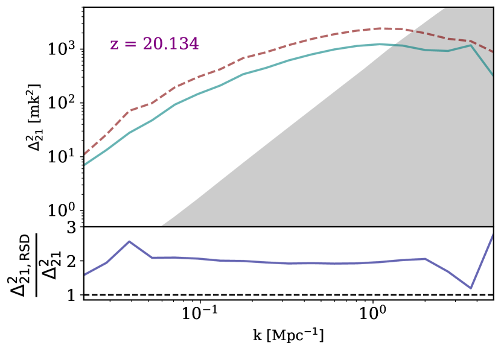 |
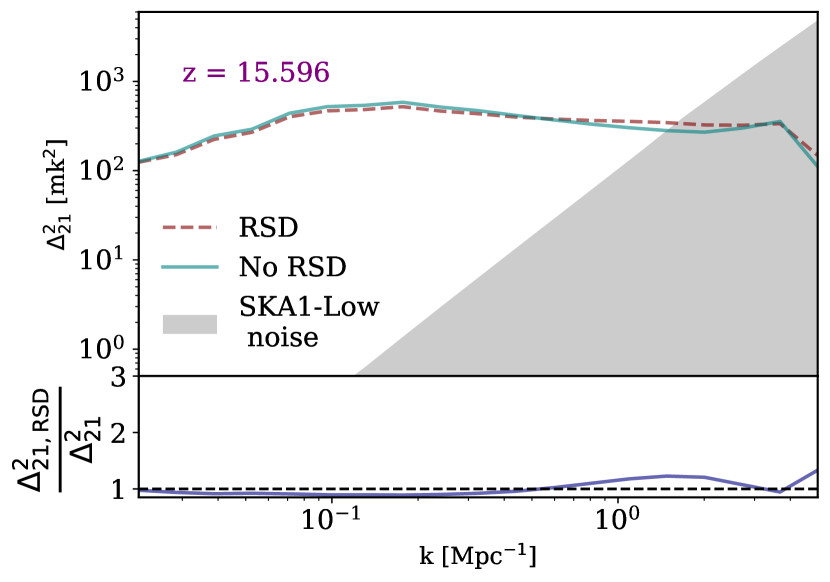 |
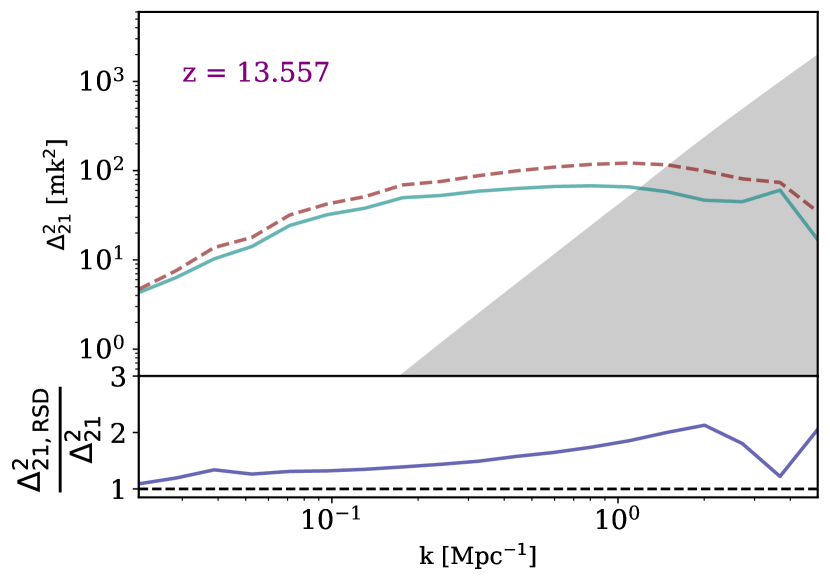 |
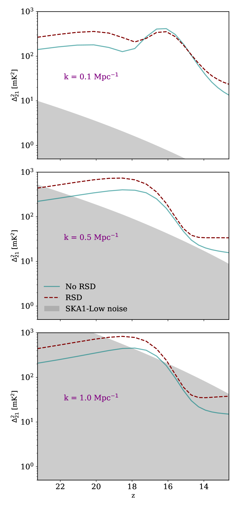 |
3.1.1 أطياف القدرة المتوسطة كرويا
الهدف الرئيسي للتلسكوبات الراديوية الحالية هو قياس التقلبات في . والمقياس من الرتبة الأولى لتكميم التقلبات هو طيف القدرة. وبافتراض أن الإشارة متناحية الخواص، يمكننا تقدير طيف القدرة المتوسط كرويا، المعرف كما يلي:
| (7) |
حيث هو تحويل فورييه لـ ، و هي دلتا كرونيكر ثلاثية الأبعاد. وفي هذه الورقة نستخدم طيف القدرة عديم الأبعاد (Peacock_1999). وفيما يلي نشير إلى باسم طيف القدرة ما لم يرد خلاف ذلك.
في الشكل 1 تظهر مع RSDs (خط أحمر متقطع) ومن دونها (خط أزرق متصل) في النصف العلوي من كل لوحة، إلى جانب الضوضاء المتوقعة من SKA1-Low (منطقة مظللة) لمجموعة مختارة ذات دلالة من الانزياحات الحمراء. ويعرض النصف السفلي من اللوحات نسبة مع RSDs إلى قيمتها من دونها. تعزز RSDs طيف قدرة الإشارة بدرجة كبيرة قبل الانتقال من الانبعاث إلى الامتصاص وبعده. ويعود هذا التعزيز في إلى تأثير كايزر، الذي يسبب زيادة في التقلبات ومن ثم في القدرة. ويتطابق مخطط النسبة عند (قبل بدء التسخين) و (حيث تحقق تشبع درجة الحرارة) تقريبا مع عامل التضخيم 1.87 الذي حسبه Mao2012Redshift-spaceRe-examined. وهذا التطابق متوقع لأن تقلبات لا تتأثر إلى حد كبير بتغيرات درجة الحرارة، إذ تنشأ أساسا من تقلبات مجال الكثافة. وعند يزيد التسخين بالأشعة السينية الإشارة الآتية من القمم عالية الكثافة مع ارتفاع درجة الحرارة، فيعاكس تأثير كايزر بفعالية. وعلى المقاييس الكبيرة جدا، يسبب إدراج RSDs انخفاضا طفيفا في القدرة، ويرجح أن ذلك عائد إلى استمرار ظهور هذه المناطق بصورة أشد شبهًا بالفراغ مما هي عليه في الفضاء الحقيقي. ويعود تأثير كايزر في نهاية المحاكاة، بعد بلوغ تشبع درجة الحرارة، عندما تعود المناطق الكثيفة لتؤثر في الإشارة.
يمكن رؤية أثر RSDs بوضوح في تطور الأعداد الموجية المفردة المبين في الشكل 2. وعلى الرغم من أن التقلبات الإضافية الناتجة من RSDs تنقص القدرة إنقاصا طفيفا على المقاييس الكبيرة جدا أثناء التسخين غير المتجانس ( في اللوحة العلوية، من إلى )، فإن التقلبات تتعزز عند الانزياحات الحمراء الأخرى. ومن غير المرجح أن يؤثر الانخفاض الطفيف في قدرة التقلبات واسعة النطاق أثناء التسخين بالأشعة السينية بدرجة كبيرة في قابلية الكشف بالنسبة إلى ضوضاء تلسكوب SKA1-Low، وفي سيناريو الضوضاء الذي ندرسه هنا تقع هذه الأعداد الموجية العالية فوق الضوضاء المتوقعة بكثير. أما المقاييس الأصغر المبينة هنا ( في اللوحة الوسطى و في اللوحة السفلى)، فإن تتعزز عند جميع الانزياحات الحمراء بفعل RSDs، مما يزيد قابليتها للكشف. وعند إدراج RSDs تكون للمقياس المتوسط () أعلى من ضوضاء التلسكوب لكل في نموذج الضوضاء المدروس هنا. غير أنه حتى في سيناريو الضوضاء المتفائل هذا، لا تكون أعلى من ضوضاء التلسكوب إلا عند للمقياس الأصغر المبين هنا ().
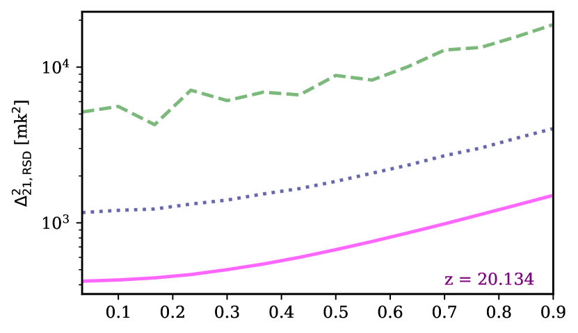
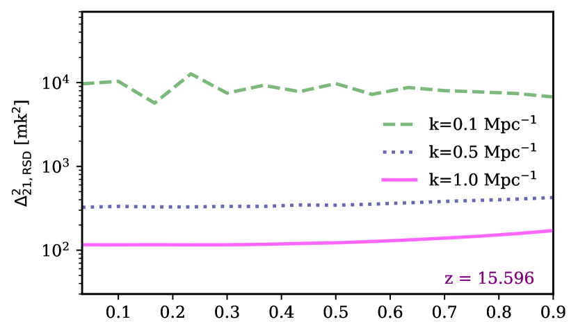
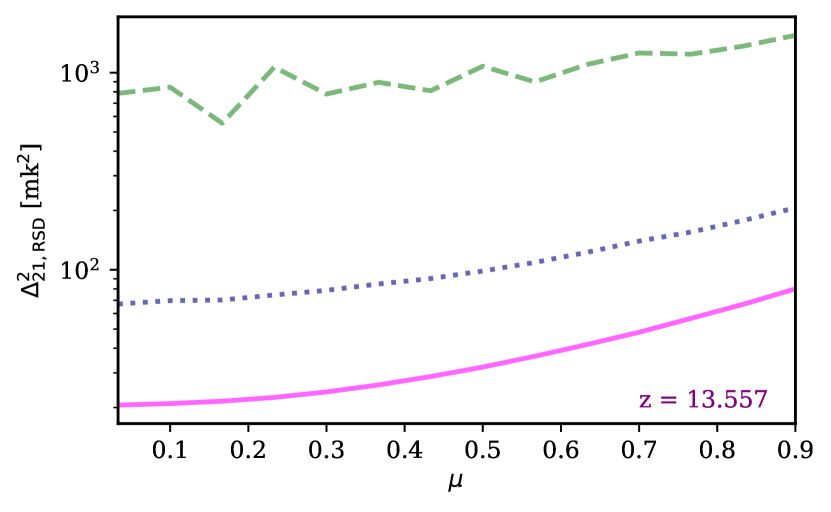
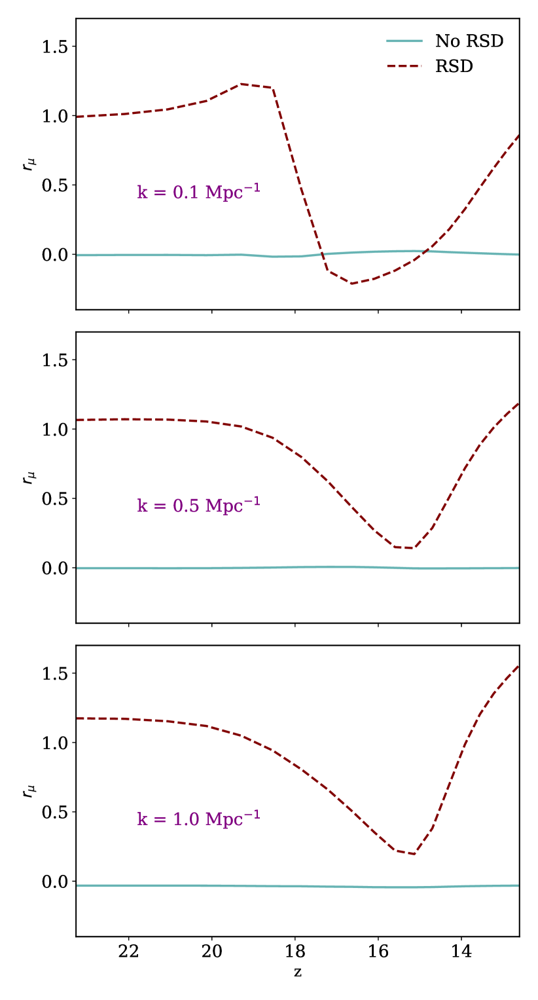
3.1.2 اللاتناحي في طيف القدرة
تقيس القيمة المتوسطة كرويا لـ أطياف القدرة بدقة في الفضاء الحقيقي لأن الإشارة متناحية الخواص. غير أنه من المعروف جيدا أن RSDs تضيف لاتناحيات إلى إشارة 21-سم، لأنها تُدخل تشوهات على طول LoS لا في الاتجاهات العمودية عليه. ولذلك فمن الملائم تجميع لا في فقط، بل أيضا في حيث ، وحيث هي الزاوية بين وLoS.
في الشكل 3 نعرض كيف يعتمد طيف القدرة على لمجموعة مختارة من الأعداد الموجية (0.1 Mpc-1، و0.5 Mpc-1، و1.0 Mpc-1 وهي الخطوط الخضراء المتقطعة والكحلية المنقطة والأرجوانية المتصلة، على الترتيب) والانزياحات الحمراء (20.134، و15.596، و13.557 في اللوحات العليا والوسطى والسفلى، على الترتيب). حسبنا أطياف القدرة لأغلفة كروية ذات k ثابت، ثم جمعنا البيانات في صناديق عرضها . لاحظ أن هذه المنحنيات ستكون مسطحة لو حُسبت من حجم محاكاة لا يتضمن RSDs. وتدخل RSD اعتمادا كثير حدود من الدرجة الرابعة لطيف القدرة على (مثلا Barkana2005AFluctuations; Mao2012Redshift-spaceRe-examined). وعند يظهر اعتماد واضح على ، مع قدرة أكبر عند القيم الصغيرة لـ ، أي عندما تكون عمودية على LoS. وعند ينخفض الاعتماد على بدرجة كبيرة، مما يعني أن مقدار اللاتناحي المدخل يتناقص مع تقدم التسخين. وينشأ هذا التناحي من أن التسخين بالأشعة السينية يزيل الامتصاص العميق من القمم عالية الكثافة. وأخيرا يعود اللاتناحي عند عندما يقترب تشبع درجة الحرارة.
ومن المفيد النظر بمزيد من التفصيل في تطور اللاتناحي زمنيا. نناقش ذلك الآن باستخدام نسبة اللاتناحي، كما عُرفت في Fialkov2015، وتعطى بـ:
| (8) |
حيث تؤخذ المتوسطات على الزوايا.
تظهر في الشكل 4 لعدة أعداد موجية (0.1 Mpc-1، و0.5 Mpc-1، و1.0 Mpc-1 في اللوحات العليا والوسطى والسفلى، على الترتيب). وتمثل الخطوط التركوازية المتصلة المكعبات من دون RSDs (وهي صفر كما هو متوقع)، وتمثل الخطوط الكستنائية المتقطعة المكعبات التي تتضمن RSDs. وبالنسبة إلى المقاييس الأصغر المبينة ( 0.1 Mpc-1 و0.5 Mpc-1)، يتناقص اللاتناحي مع بدء التسخين ويزداد مع اقتراب تشبع درجة الحرارة. غير أنه بالنسبة إلى أكبر المقاييس المدروسة هنا ( 0.1 Mpc-1)، تظهر زيادة وجيزة في قيمة مع بدء التسخين. وتزداد لأن تأثير كايزر يجعل الفراغات تبدو أقل كثافة، ومن ثم تبعث قيمة أصغر من ، كما يسبب التسخين انخفاض قيمة بينما تكون الإشارة في حالة امتصاص. والإشارة الآتية من الفراغات ضعيفة ولا تسهم في المقاييس الصغيرة. غير أن إشارة الفراغات تضيف لاتناحيا إلى المقاييس الكبيرة لأنها تزيد التباين بين المناطق عالية الكثافة ومنخفضة الكثافة.
|
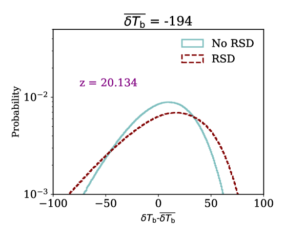 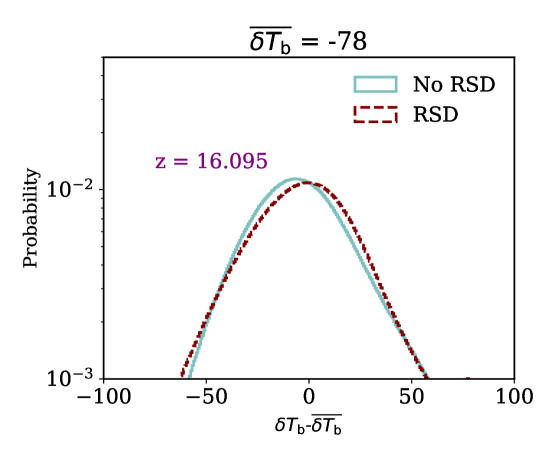 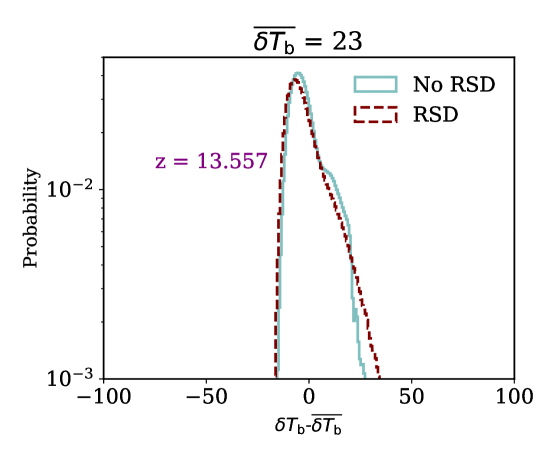 |
3.1.3 الإحصاءات أحادية النقطة
ننتقل الآن إلى مناقشة الإحصاءات أحادية النقطة لمحاكياتنا. يبين الشكل 5 PDFs للإشارة بعد طرح المتوسط عند دقة المحاكاة. في البداية، عند ، يسبب إدراج RSDs زيادة عدد النقاط في كل من الامتصاص العميق والامتصاص الضحل، إذ يجعل تأثير كايزر النقاط الكثيفة تبدو أكثر كثافة في فضاء الانزياح الأحمر والفراغات أكثر تخلخلا. وعندما تكون الإشارة في حالة امتصاص، يقابل ذلك أصغر قيم في المناطق الكثيفة وأكبرها في المناطق الشبيهة بالفراغات. وعند يكون الانتقال من الامتصاص إلى الانبعاث قد بدأ، ويحتوي PDF للمحاكاة التي تتضمن RSDs الآن على نقاط أقل في الامتصاص العميق جدا، لأن الأشعة السينية تسخن أولا المناطق الكثيفة وتنقلها إلى الانبعاث. وتنتج الفراغات الآن أصغر قيم في حجم المحاكاة لأنها الأبعد عن الهالات وآخر ما يسخن. وعند تكون الإشارة قد انتقلت إلى الانبعاث، ويعود تأثير كايزر ليظهر بوضوح عند النهاية العليا من PDF. غير أنه لا يوجد فرق بين المنحنيين عند القيم الأصغر لـ بسبب بدء إعادة التأين. فقد بدأت المصادر تؤين المناطق عالية الكثافة المحيطة بها، مما يدفع نحو الصفر.
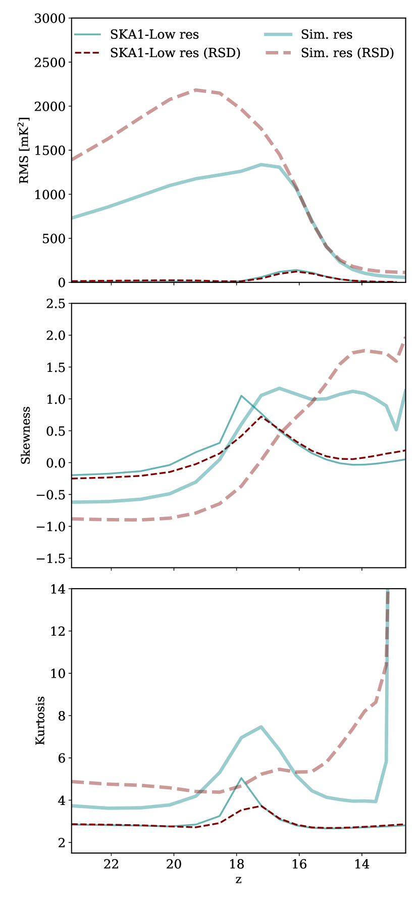 |
لا تحتوي على أي معلومات غير غاوسية عن الإشارة. وبما أن من المتوقع أن تكون إشارة CD غير غاوسية بشدة (مثلا Watkinson2015TheMoments; Ross2017)، فإننا ننظر بعد ذلك في الالتواء والتفرطح. نستخدم الالتواء والتفرطح عديمي الأبعاد المعطيين بـ:
| (9) |
و
| (10) |
هنا، هي الكمية محل الاهتمام، أي ، و هو العدد الكلي لنقاط البيانات، و و هما متوسط وتباينها، على الترتيب.
يبين الشكل 6 RMS والالتواء والتفرطح في اللوحات العليا والوسطى والسفلى، على الترتيب. وتمثل الخطوط السميكة إحصاءات محسوبة عند دقة المحاكاة، بينما تبين الخطوط الرفيعة الإحصاءات نفسها عند الدقة المتوقعة لـ SKA1-Low. ومرة أخرى يمثل الخط الأحمر المتقطع المحاكاة التي تتضمن RSDs، ويمثل الخط الأزرق المتصل المحاكاة من دونها. وعند دقة المحاكاة، يعزز إدراج RSDs قيمة RMS بدرجة كبيرة قبل وبعد الفترة التي تقود فيها التسخين غير المتجانس التقلبات، كما شوهد في المخططات السابقة لـ ، فتبلغ ذروة تقارب 2200 mK2، في مقابل نحو 1400 mK2 عندما لا تُدرج RSDs. غير أن هذا الأثر يكاد لا يُلاحظ عند الدقة المتوقعة لـ SKA1-Low.
يكون الالتواء في اللوحة الوسطى من الشكل 6 في البداية أدنى بنحو الثلثين، أي أكبر مقدارا بنحو الثلثين، في فضاء الانزياح الأحمر مقارنة بالفضاء الحقيقي، لأن RSDs تزحزح PDF في البداية نحو قيم الأكثر سلبية، إذ تبعث النقاط عالية الكثافة في امتصاص عميق. ومع انتقال الإشارة إلى الانبعاث يبدأ PDF للمحاكاة التي تتضمن RSDs بالتحرك نحو قيم أكثر إيجابية، لأن النقاط عالية الكثافة تبعث الآن إشارة في انبعاث قوي، مما ينتج قيمة أكبر بنحو 2 مرات للالتواء في فضاء الانزياح الأحمر. غير أن هذا الأثر يبدو أقل وضوحا عند دقة SKA1-Low.
التفرطح، المبين في اللوحة السفلى من الشكل 6، مقياس لطول ذيول PDF. ننظر أولا إلى التفرطح عند دقة المحاكاة، ممثلا بالخطوط السميكة. في البداية تمتلك المحاكاة التي تتضمن RSDs تفرطحا أكبر، نحو 5 مقارنة بنحو 3.7 في حجم المحاكاة، لأن المناطق عالية الكثافة تعطي قيما أكثر سلبية. غير أن أكثر المناطق كثافة تسخن بسرعة لأنها الأقرب إلى المصادر، مما يزيل هذا الذيل السلبي الأولي في . وأثناء حدوث التسخين بالأشعة السينية، وقبل بلوغ تشبع درجة الحرارة، تظهر المحاكاة من دون RSDs زيادة كبيرة في اللاغاوسية تبلغ ذروة تقارب 7.5. أما هذه الذروة فهي أصغر كثيرا في تفرطح المحاكاة عندما تُدرج RSDs، إذ لا تصل إلا إلى نحو 5.5. والتقلبات المسؤولة عن هذه الزيادة في اللاغاوسية هي تقلبات التسخين واسعة النطاق، وهي أيضا التقلبات التي لوحظ أنها مكبوحة قليلا في . وعندما تصل أعلى المناطق كثافة إلى الانبعاث، فإنها تشكل ذيلا آخر عند منطقة الموجبة، وهو أثر يعززه تأثير كايزر، مما يؤدي إلى زيادة التفرطح في النموذج الذي يتضمن RSDs. وتحدث زيادة حادة في التفرطح في نهاية المحاكاة لكلا النموذجين، بسبب تأين المناطق عالية الكثافة مع بدء إعادة التأين، مما يؤدي إلى انخفاض وإضافة ذيل آخر. وتكاد هذه الزيادة في التفرطح تضيع تماما عندما تُنعم المحاكاة إلى دقة SKA1-Low، على الأرجح لأن النقاط عالية الكثافة لا تُحل.
عند دقة SKA1-Low، الممثلة في اللوحة السفلى من الشكل 6 بالخطوط الرفيعة، تبقى ذروة التفرطح الناتجة عن التسخين بالأشعة السينية حاضرة عند دقة SKA1-Low ولكن بمقدار أصغر بكثير. ومرة أخرى تكون قيمة الذروة أعلى عندما لا تُدرج RSDs، نحو 5.1، مما تكون عليه عند إدراجها، نحو 3.6. وللأسف يشير ذلك إلى أن التفرطح لن يكون فعالا في استطلاع توقيت التسخين بالأشعة السينية كما كان يعتقد سابقا. وبخلاف الذروة التي يقودها التسخين بالأشعة السينية، ينتج النموذجان القيمة نفسها للتفرطح، وتبقى ثابتة تقريبا عند نحو 3.0 لبقية المحاكاة.
3.2 الفروق بين النماذج الفيزيائية الفلكية المختلفة
في هذا القسم ننظر في الفروق بين نماذجنا الفيزيائية الفلكية وقابليتها للكشف. وتلخص معلمات المصادر المختلفة في كل نموذج في الجدول LABEL:tab:models. نلخص أولا النتائج السابقة لهذه النماذج. فالنماذج ذات تشبع Ly- المبكر، المنتهية بـ ‘-EL’، تفترض كما في النموذج المرجعي أن تشبع Ly- تحقق قبل بدء المحاكاة. أما النماذج ذات تشبع Ly- المتأخر، المنتهية بـ ‘-LL’، فتفترض أن المصادر في محاكياتنا هي الأولى، مما يضمن أن الإشارة مقترنة تماما بـ CMB في البداية. وفي سيناريوهات اقتران Ly- المتأخر هذه، تكون خلفية Ly- مصدرا إضافيا للتقلبات إلى أن يتحقق تشبع Ly- عند نحو . والنماذج التي تبدأ بـ ‘S1-’ و‘S2-’ تحتوي على HMXBs وتؤدي إلى تسخين مبكر نسبيا مقارنة بالنماذج الأخرى، التي تبدأ بـ ‘S3-’ و‘S4-’، والتي تحتوي فقط على QSOs وتنتج سيناريو تسخين أكثر تأخرا بكثير. أما QSOs ذات الأطياف الألين، في نماذج ‘S4-’، فتسخن IGM بمعدل أبطأ قليلا لأنها تنتج فوتونات ذات طاقة أدنى. وبما أن QSOs مصادر أندر، فإنها تزيد اللاغاوسية في الإشارة المنتجة، ولذلك تمتلك جميع النماذج التي تحتوي عليها قيما أعلى للالتواء والتفرطح (‘S2-’ و‘S3-’ و‘S4-’).
|
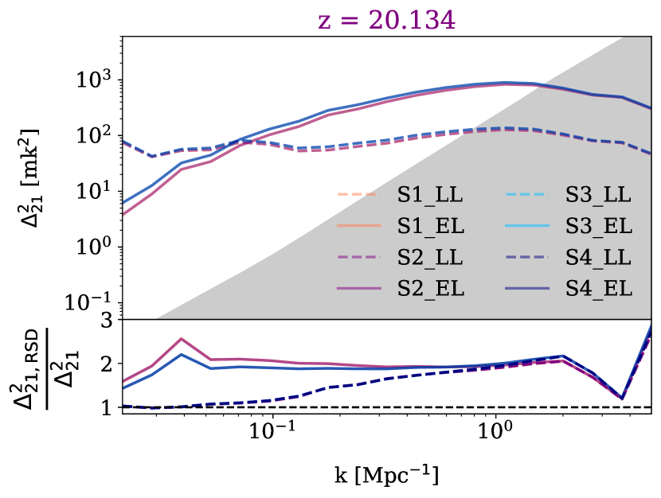 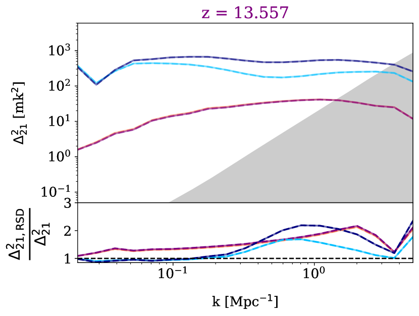 |
|
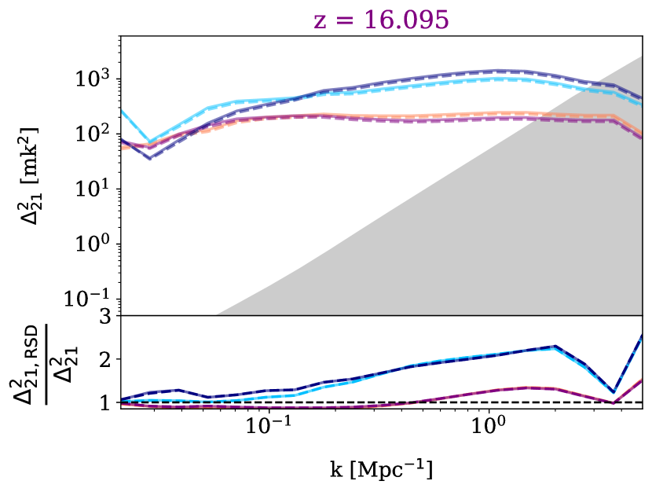 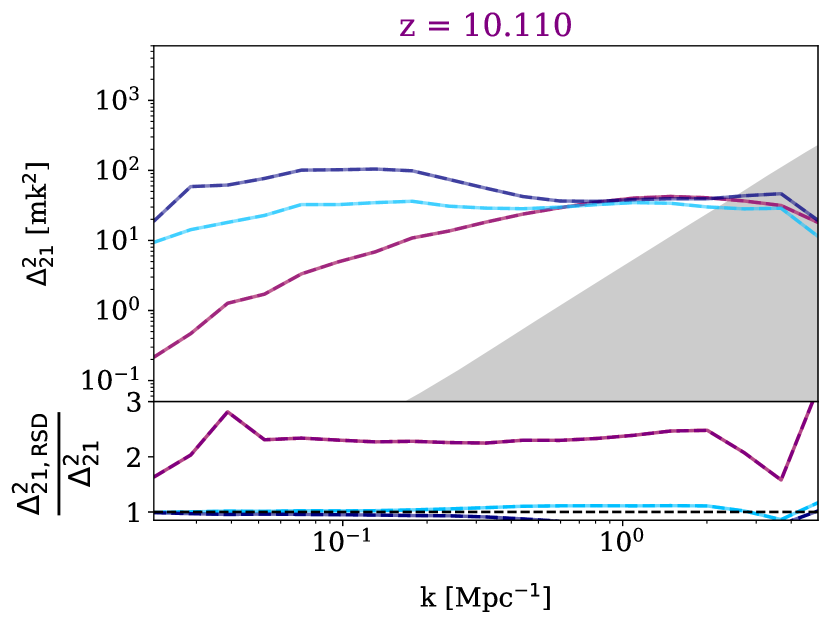 |
|
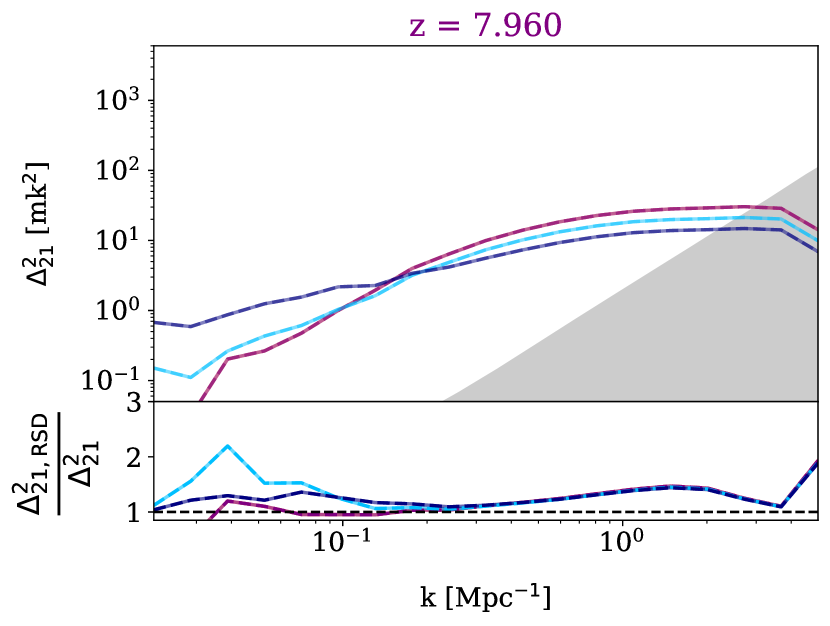 |
يعرض الشكل 7 قيمة لجميع النماذج الفيزيائية الفلكية في النصف العلوي من كل لوحة. وفي حين أن نماذج Ly- المتأخرة أرجح أن تنتج قياسا لـ عند أعداد موجية عالية جدا ( Mpc-1) في بداية CD ()، فإنها أقل قابلية للكشف عند جميع الأعداد الموجية الأكبر من ذلك. وتقع النماذج المبكرة فوق الضوضاء المتوقعة في نموذجنا عند ، بينما تقع النماذج المتأخرة فوقها في مجال أكبر قليلا، . ومن مخططات النسبة يتضح أن إدراج RSDs يعزز القدرة على المقاييس التي تكون فيها القدرة قريبة من مستوى الضوضاء المتوقع من نموذج ضوضاء SKA1-Low لدينا. ومن ثم فإن احتمال إجراء قياس لـ في سيناريو ضوضاء SKA1-Low هذا أكبر مما كان متوقعا سابقا، أي قبل إضافة RSDs إلى المحاكيات، في جميع النماذج. غير أن قابلية كشف النماذج ذات التسخين المتأخر لا تزداد بدرجة كبيرة بإدراج RSDs، لأن الإشارة الآتية من القمم عالية الكثافة تزال بالتأين قبل بلوغ تشبع درجة الحرارة. ومع ذلك، تظل نماذج التسخين المتأخر هذه منتجة لـ ذات المقدار الأكبر، كما وجد سابقا في Ross2019EvaluatingDawn.
من مخططات النسبة في النصف السفلي من لوحات الشكل 7 نرى أن خلفية Ly- المتأخرة وغير المتجانسة (خطوط متقطعة) تزيل التعزيز في القدرة الناتج من RSDs على المقاييس الكبيرة. وتبدأ جميع النماذج ذات تشبع Ly- المبكر (خطوط متصلة) بنسبة تقارب ، ثم تنخفض مع بدء التسخين. وكما وجد سابقا (Ross2019EvaluatingDawn)، تُظهر النماذج ذات خلفية Ly- غير المتجانسة كبطا أوليا للقدرة على جميع المقاييس. ويتقدم التسخين على نحو مختلف بين النماذج، مما يجعل النسبة تنخفض أبطأ في النماذج ذات التسخين المتأخر (S3 LL وS3 EL وS4 LL وS4 EL). وبينما ترى نماذج التسخين المبكر أن النسبة ترتفع مرة أخرى إلى نحو قبل بدء إعادة التأين، لا تقترب نماذج التسخين المتأخر من هذه القيمة ثانية، لأن إعادة التأين تكون قد بدأت قبل اكتمال تشبع درجة الحرارة.


يبين الشكل 8 صورا صورية من مجموعة محاكياتنا عند الدقة المتوقعة لـ SKA1-Low (خط أساس أقصى 1.2 km). نخفض صورنا إلى الدقة المتوقعة من SKA1-Low. وقد نُعمت الصور بحزمة غاوسية ذات FWHM يقابل خط أساس أقصى 1.2 km عند التردد ذي الصلة، ونُعمت في عرض النطاق بدالة قبعة علوية (بعرض يساوي المسافة المقابلة لعرض الحزمة). وكما وجد سابقا في Ross2019EvaluatingDawn، يمكن تمييز جميع الصور بالعين عند دقة SKA1-Low. كما أن الفرق بين تشبع Ly- المتأخر والمبكر ظاهر أيضا عند هذه الدقة، وهو ما لم يُعرض سابقا.
في الشكل 9 نضيف ضوضاء تلسكوبية محاكاة، كما ورد في القسم 2.5، إلى صورنا الصورية. وتظل السمات التي يدخلها التسخين الطويل بالأشعة السينية في الإشارة واضحة حتى بعد إضافة هذه الضوضاء. إضافة إلى ذلك، يبقى الفرق بين تشبع Lyman-alpha المبكر والمتأخر مرئيا كذلك مع ضوضاء التلسكوب. وهذا الفرق يعزز أكثر زعمنا السابق أن التصوير في CD سيكون ممكنا باستخدام SKA. وينبغي أن يلاحظ القارئ أن ضوضاء التلسكوب المدروسة في هذا العمل متفائلة إلى حد كبير. وتخبرنا الشرائح في الشكل 9 أن الإشارة عالية بما يكفي لتبقى السمات مرئية في الصور حتى عندما تزداد الضوضاء بعامل . غير أننا لم نأخذ في الحسبان المقدمات في أرصاد 21-سم. ويمكن لبقايا المقدمات أن تجعل تصوير CD صعبا. ولذلك ينبغي النظر إلى صور 21-سم الصورية هذه على أنها الحالة الأكثر تفاؤلا.
|
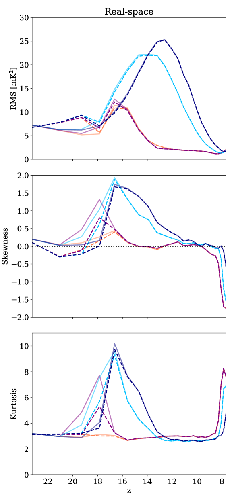 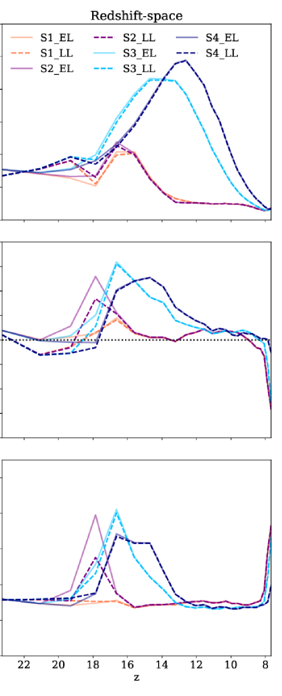 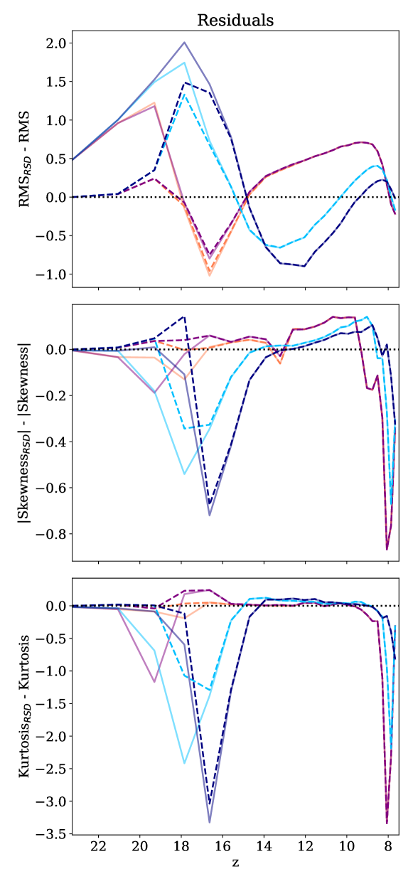 |
أخيرا، يبين الشكل 10 RMS والالتواء والتفرطح في الصفوف العليا والوسطى والسفلى، على الترتيب، لجميع النماذج الفيزيائية الفلكية عند دقة SKA1-Low مع تضمين ضوضاء التلسكوب. ويعرض العمود الأيسر هذه الإحصاءات في الفضاء الحقيقي، والعمود الأوسط في فضاء الانزياح الأحمر، وترسم البواقي في العمود الأيمن. اخترنا عرض البواقي بدلا من النسب لأن النسب ضوضائية نسبيا بسبب انخفاض بعض القيم، ولا سيما الالتواء. ومرة أخرى ينبغي التنبيه إلى أن المقدمات لم تؤخذ في الحسبان، مما يجعل هذا سيناريو أفضل حالة.
وكما وجد سابقا، تنتج جميع النماذج مسارات زمنية مميزة لـ RMS، على الرغم من أن نماذج التسخين المبكر (S1-El وS1-LL وS2-EL وS2-LL) تتبع تطورا متشابها إلى حد ما لأن HMXBs تهيمن على التسخين بالأشعة السينية. وفي الأزمنة المبكرة، تظهر RMS تطورا مختلفا بوضوح بين سيناريوهات Ly- المختلفة، أي تشبع Ly- المبكر (خطوط متصلة) وتشبع Ly- المتأخر (خطوط متقطعة)، سواء مع RSDs أو من دونها. وتظهر البواقي تعزيزا في RMS يصل إلى 2 mK2 في نماذج التسخين بالأشعة السينية المتأخر و1 mK2 في النماذج المبكرة من نماذج تشبع Ly- المتأخر في فضاء الانزياح الأحمر في الأزمنة المبكرة. وبالمقابل يحدث انخفاض في RMS عندما يهيمن التسخين بالأشعة السينية، يصل إلى نحو 1 mK2 في جميع النماذج. وينشأ هذا السلوك من أن خلفية Ly- غير المتجانسة تميل إلى جعل المناطق منخفضة الكثافة أقرب إلى الصفر، لأنها لم تقترن بعد لبعدها عن المصادر، بينما يميل التسخين بالأشعة السينية إلى فعل العكس، إذ إن المناطق الأقرب إلى المصادر تسخن أولا مما يخفض مقدارها. ولذلك، وكما نوقش سابقا، تبني خلفية Ly- غير المتجانسة على تأثير كايزر بدلا من إلغائه كما يفعل التسخين بالأشعة السينية.
إجمالا، يتبع الالتواء (اللوحات الوسطى من الشكل 10) والتفرطح (اللوحات السفلى) تطورا مشابها لما وجدناه في عملنا السابق Ross2019EvaluatingDawn، ولكن عموما بمقادير أقل قليلا. وينشأ هذا الانخفاض في اللاغاوسية من أن تقلبات التسخين بالأشعة السينية وتأثير كايزر تلغي بعضها بعضا بفعالية. ويبين كل من الالتواء والتفرطح أن اللاغاوسية أكبر في فضاء الانزياح الأحمر بعد بلوغ تشبع درجة الحرارة، كما هو متوقع لأن الإشارة تصبح الآن محكومة بتقلبات الكثافة. وأخيرا يبين الالتواء والتفرطح أن اللاغاوسية في فضاء الانزياح الأحمر أقل منها في الفضاء الحقيقي عند بدء إعادة التأين. ومع ذلك تبقى مقاييس الالتواء والتفرطح جيدة للتمييز بين النماذج التي تحتوي على HMXBs والنماذج التي تحتوي على HMXBs وQSOs معا، وهي نماذج تنتج أطياف قدرة وقياسات RMS متشابهة.
تنتج نماذج تشبع Ly- المتأخر (خطوط متصلة) التواء سلبيا أكبر في فضاء الانزياح الأحمر، في حين لا تظهر نماذج تشبع Ly- المبكر (خطوط متقطعة) فرقا كبيرا. ويعود هذا الفرق بين سيناريوهي Ly- إلى أن اقتران Ly- المتأخر يعني وجود نقاط كثيرة قريبة من الصفر حيث لم تنفصل الإشارة بعد عن CMB، مما يزحزح الإشارة نحو قيم أكبر مما في سيناريو Ly- المبكر. وفي العمل السابق من دون RSDs كان هذا الأثر أقل بروزا. وينتج سيناريو Ly- المتأخر تفرطحا أعلى من السيناريو المبكر. ولم يكن هذا الفرق مرئيا سابقا عند دقة SKA1-Low مع ضوضاء التلسكوب، وهو ناتج من خلفية Ly- غير المتجانسة، إذ تجعل كثيرا من الإشارة قريبا من الصفر وتشكل النقاط التي اقترنت ذيلا. وفي نهاية المحاكيات، مع بدء إعادة التأين، يبدو أن إدراج RSDs يخفض مقدار كل من الالتواء والتفرطح في فضاء الانزياح الأحمر مقارنة بالفضاء الحقيقي.
4 الخلاصة
بما أننا سنرصد إشارة 21-سم في فضاء الانزياح الأحمر لا في الفضاء الحقيقي، فمن الضروري أن ندرج RSDs في تنبؤاتنا. في هذه الورقة قدمنا تحليلنا لإشارة 21-سم مع RSDs ومن دونها، من مجموعة محاكيات RT العددية الكاملة المعروضة في Ross2017; Ross2018 وRoss2019EvaluatingDawn. عرضنا أولا إحصاءات تفصيلية لنموذجنا المرجعي، المبرز في الجدول LABEL:tab:models، بما في ذلك أطياف القدرة المتناحية واللاتناحية، وتطور أعداد موجية مختلفة ونسبة اللاتناحي مع الانزياح الأحمر، والإحصاءات أحادية النقطة (PDFs وRMS والالتواء والتفرطح). وعلقنا على الفروق في إشارة 21-سم الأكثر واقعية هذه بعد إدراج RSDs، وعلى قابليتها للكشف. ثم عرضنا الفروق بين نماذجنا الفيزيائية الفلكية المختلفة مع إدراج RSDs، وبيّنا أنها تبقى قابلة للتمييز والكشف.
عززت RSDs التقلبات عندما كانت تقلبات درجة حرارة السطوع التفاضلية محكومة بمجال الكثافة بفعل تأثير كايزر. في البداية طابقت نسبة على المقاييس الكبيرة عامل التضخيم 1.87 المتوقع لأطياف قدرة المادة (Mao2012Redshift-spaceRe-examined)، لكنها انخفضت مع استمرار المحاكاة. ويشبه هذا السلوك إلى حد ما ما وجده Jensen2013ProbingDistortions، حيث يتناقص التعزيز الناتج من RSDs مع انخفاض مقدار إشارة 21-سم من أكثر النقاط كثافة؛ ففي حالة EoR كان ذلك بسبب خفض المناطق المتأينة قيمة ، أما في CD فكان بسبب زيادة التسخين بالأشعة السينية قيمة . غير أن التعزيز في القدرة، خلافا لما يحدث في EoR، لم يستمر في الانخفاض بل ازداد مرة أخرى مع اقتراب تشبع درجة الحرارة. وفي CD ينشأ انخفاض نسبة من امتلاك المناطق الكثيفة قيمة عالية المقدار عندما تكون الإشارة في حالة امتصاص، بينما يرفع التسخين تفضيليا قيمة في هذه المناطق. ولا يؤثر التسخين بالأشعة السينية في الفراغات في الأزمنة المبكرة بالقدر نفسه الذي يؤثر به في القمم الكثيفة، ولذلك لا يتداخل كثيرا مع تأثير كايزر هناك، حيث كان سيعمل في الاتجاه نفسه رافعا . وقد رأينا أثرا مشابها عندما تداخلت خلفية Lyman-alpha غير المتجانسة لدينا مع بدء التسخين بالأشعة السينية في (Ross2019EvaluatingDawn): فبدلا من أن تضيف التقلبات بعضها إلى بعض، ألغت بعضها بعضا. وعندما يبدأ التسخين بالأشعة السينية بالتأثير في الفراغات، تكون الإشارة قد انتقلت إلى الانبعاث. عندئذ يعمل التسخين بالأشعة السينية في هذه المناطق بعكس تأثير كايزر. فتأثير كايزر يجعل الفراغات أشد فراغية، مما يخفض الآن قيمة ، لكن التسخين بالأشعة السينية يرفعها. وعلى الرغم من أن التعزيز في القدرة كان غالبا أدنى من 1.87 ولم يبلغ قط الحد الأعلى 5 الذي حدده Mao2012Redshift-spaceRe-examined; Ghara201521cmVelocities، فقد بينا أن إدراج RSDs يزيد قليلا قابلية كشف عند جميع الانزياحات الحمراء وفي جميع نماذجنا الفيزيائية الفلكية الأخرى. وبرغم صغر هذا التعزيز، فإنه يقوي الأمل في أن قياس لإشارة 21-سم من CD قد يكون ممكنا باستخدام SKA، حتى بعد إزالة المقدمات.
أضاف إدراج RSDs لاتناحيا إلى الإشارة، كما وُجد في كثير من الأعمال السابقة (مثلا Bharadwaj2004TheReionization; Barkana2005AFluctuations; McQuinn2006CosmologicalReionization; Mao2012Redshift-spaceRe-examined; Jensen2013ProbingDistortions; Majumdar13; Majumdar2016). وظهر هذا اللاتناحي الإضافي عندما ضغطت السرعات الخاصة الكثافات على طول LoS في فضاء الانزياح الأحمر. استخدمنا طيف القدرة اللاتناحي ونسبة اللاتناحي لدراسة أثر RSDs في الإشارة. وأظهرت نتائجنا أنه على الرغم من أن RSDs تضيف لاتناحيات إلى الإشارة قبل بدء التسخين بالأشعة السينية وعندما يقترب تشبع درجة الحرارة، فإن هذه اللاتناحيات تتناقص مع تقدم التسخين بالأشعة السينية. وتتفق نتائجنا مع Jensen2013ProbingDistortions، إذ إن اعتماد طيف القدرة الذي وجدناه في نهاية محاكاتنا يطابق ما وجد في بداية محاكياتهم. وقد تبين أن سلوك اللاتناحي يختلف كثيرا عما يحدث للاتناحي أثناء إعادة التأين. ففي النتائج التي وجدها Jensen2013ProbingDistortions لا تتلاشى اللاتناحيات، بل ينعكس الاعتماد على مع تقدم إعادة التأين. ويرجع اللاتناحي في EoR إلى أن التأين حدث محليا، فقطع بسرعة القمم عالية الكثافة، أما في CD فقد أثر التسخين بالأشعة السينية في حجم المحاكاة كله وكذلك في أطياف القدرة على جميع المقاييس. وبدت الإشارة من الفترة الزمنية التي تنتج أكبر مقدار من التقلبات في CD متناحية الخواص إلى حد معقول. ولذلك، ففي حين وجد سابقا أن طيف القدرة اللاتناحي مفيد خلال EoR، وجدنا أنه من غير المرجح أن يقدم معلومات إضافية كثيرة خلال CD.
كان سلوك PDFs مشابها إلى حد ما لما وجده Jensen2013ProbingDistortions، مع انخفاض التعزيز الناتج من RSDs مع انخفاض مقدار إشارة 21-سم من أكثر النقاط كثافة؛ ففي حالة EoR كان هذا بسبب خفض المناطق المتأينة قيمة ، أما في CD فكان بسبب رفع التسخين بالأشعة السينية قيمة . غير أن تطور PDFs خلال CD تعقد لأن الإشارة انتقلت من الامتصاص إلى الانبعاث. ففي البداية كانت هناك نقاط أكثر في الانبعاث، ثم نقاط أكثر في الامتصاص. وأدى هذا الأثر أيضا إلى انقلاب إشارة الالتواء، مع امتلاك الالتواء من المحاكاة التي تتضمن RSDs مقدارا أكبر في جميع الأزمنة مقارنة بالإشارة من دون RSDs. وقد عرضنا صورا صورية من محاكياتنا عند دقة تلسكوب SKA1-Low، من دون ضوضاء التلسكوب ومعها. ووجدنا أنه حتى مع إضافة ضوضاء التلسكوب، ظلت السمات من جميع النماذج مرئية بوضوح، كما تنبأ سابقا Ross2019EvaluatingDawn. غير أن RMS للإشارة في نموذجنا المرجعي، مع إدراج RSDs ومن دونها، كان غير قابل للتمييز، مما يشير إلى أن تصوير الإشارة خلال CD لم يتحسن في هذه الحالة الأكثر واقعية. ووجدنا أن لاغاوسية الإشارة تنخفض بإدراج RSDs خلال CD. وقد يحتوي ثنائي الطيف على معلومات غير غاوسية قابلة للكشف. غير أنه في حين يرجح أن تكون لدى SKA1-Low حساسية كافية لكشف ثنائي الطيف (مثلا Yoshiura2015SensitivityReionization)، اقترح Watkinson2020 أن إزالة المقدمات ستكون شديدة التعقيد. ونترك تحليل ثنائي الطيف لإشارة 21-سم من CD في محاكياتنا، كما أُنجز بالفعل لـ EoR في Majumdar2020، لعمل مستقبلي.
إذا وُجدت خلفية Ly- غير متجانسة، وجدنا أن إدراج RSDs يزيد بدرجة كبيرة كلًّا من التقلبات في أطياف القدرة والسمات المرئية في الصور خلال المراحل الأولى من CD. حدث هذا التعزيز لأن خلفية Ly- غير المتجانسة جعلت إشارة الامتصاص تُرصد من المناطق الأكثف، بينما جاءت إشارة أقل من المناطق ناقصة الكثافة لأنها آخر المناطق انفصالا عن CMB. وعززت RSDs التقلبات، مثل تأثير كايزر، إذ جعلت هي أيضا المناطق فائقة الكثافة تبدو أكثر كثافة وتصدر إشارة أكبر مقدارا. واستنتجنا أنه قد يكون ممكنا ليس فقط تصوير التقلبات الناتجة عن التسخين بالأشعة السينية في CD، بل أيضا التقلبات الناتجة عن Ly- في بعض السيناريوهات، وإن كان ذلك سيعتمد على إزالة المقدمات وعلى أول المصادر التي تتشكل في CD. وسيكون من المثير للاهتمام إجراء بحث مفصل في التقلبات الممكنة من خلفية Ly-، مثل أثر الهالات الصغيرة.
القيد الرئيسي لهذا العمل هو أن محاكياتنا لم تغط مساحة المعلمات الكبيرة المرتبطة بـ CD. فهناك احتمالات كثيرة أخرى لخصائص مصادر التسخين بالأشعة السينية وخلفية Ly-، وإن كانت كمية كبيرة منها قد استُبعدت بواسطة أرصاد خلفية الأشعة السينية (مثلا Hickox2007; Fialkov2017)، وقد استبعدنا سابقا أن يكون لـ QSOs الأقل عددا من نموذجنا الحالي أثر كبير. ونظرا إلى كلفة المحاكيات المحللة هنا، لم يكن من العملي استكشاف جميع النماذج الممكنة؛ ولا يمكن تحقيق ذلك إلا بطريقة أسرع تستخدم محاكياتنا للتحقق. إضافة إلى ذلك، توجد جوانب كثيرة أخرى من الكون المبكر لا نفهمها. ومن أمثلتها معدنية IGM، وأثر تطور المجرات، وطبيعة المصادر المبكرة جدا مثل نجوم Pop. III. وأخيرا أظهر Jensen2016TheMeasurements أن اللاتناحي الذي تدخله RSDs قد يعقد تقنيات تجنب المقدمات في EoR. ويجب أيضا بحث أثر إزالة المقدمات وتجنبها في هذه الحقبة للتحقق مما إذا كان يمكن رصد CD باستخدام SKA1-Low.
وعلى الرغم من هذه القيود، فإن إدراج تأثيرات خط البصر في نتائج محاكياتنا أنتج تنبؤات أكثر واقعية، وأظهر أن الكشف الإحصائي وإمكان التصوير باستخدام SKA1-Low أكثر ترجيحا مما كان يعتقد سابقا. وتظل كشوف أطياف القدرة مميزة للنماذج المختلفة، وتتعزز على المقاييس التي كانت ضوضاء SKA1-Low تجعل قابليتها للكشف موضع شك. وتبقى اللاغاوسية مسبارا جيدا لمصادر الأشعة السينية النادرة، على الرغم من أن RSDs لا تبدو أنها تزيد هذا الأثر. وأخيرا أصبحت قدرة SKA1-Low على تصوير المراحل الأولى من CD ممكنة الآن، لأن إدراج RSDs يعزز التقلبات من خلفية Ly- غير المتجانسة.
شكر وتقدير
نود أن نشكر Peter Nugent على تعليقاته المفيدة على الورقة، وZarija Lukić على النقاشات المفيدة حول هذا العمل. استخدم هذا المشروع موارد National Energy Research Scientific Computing Center (NERSC)، المدعوم من Office of Science التابع لـ US Department of Energy بموجب العقد رقم DE-AC02-05CH11231. وقد دُعم هذا البحث بواسطة Exascale Computing Project (17-SC-20-SC)، وهو جهد تعاوني بين U.S. Department of Energy Office of Science وNational Nuclear Security Administration. كما دُعم هذا العمل من Science and Technology Facilities Council [أرقام المنح ST/I000976/1 وST/P000525/1] وSoutheast Physics Network (SEPNet). ويدعم GM جزئيا منحة Swedish Research Council رقم 2016-03581. ودُعم هذا البحث جزئيا من Munich Institute for Astro- and Particle Physics (MIAPP) ضمن عنقود التميز DFG “Origin and Structure of the Universe”. ونقر بأن النتائج في هذه الورقة تحققت باستخدام مورد PRACE Research Infrastructure، وهو Marenostrum في Barcelona Supercomputing Center، Spain ضمن مشروع Tier-0 ‘Multi-scale Reionization’. وأُنجزت بعض الحسابات العددية على عنقود Apollo في The University of Sussex. وأُجري جزء من المحاكيات على موارد وفرتها Swedish National Infrastructure for Computing (SNIC) في PDC Center for High Performance Computing في Stockholm. أما محاكاة الأجسام المستخدمة في هذا العمل فقد أُنجزت ضمن Partnership for Advanced Computing in Europe، PRACE، مشروع Tier-0 PRACE4LOFAR على حاسوب TGCC Curie. وأخيرا، نود أن نشكر المحكم على مساعدتنا في تحسين هذا العمل بتعليقاته البناءة.